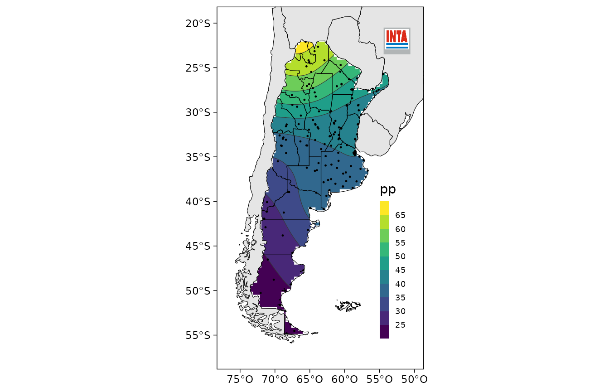
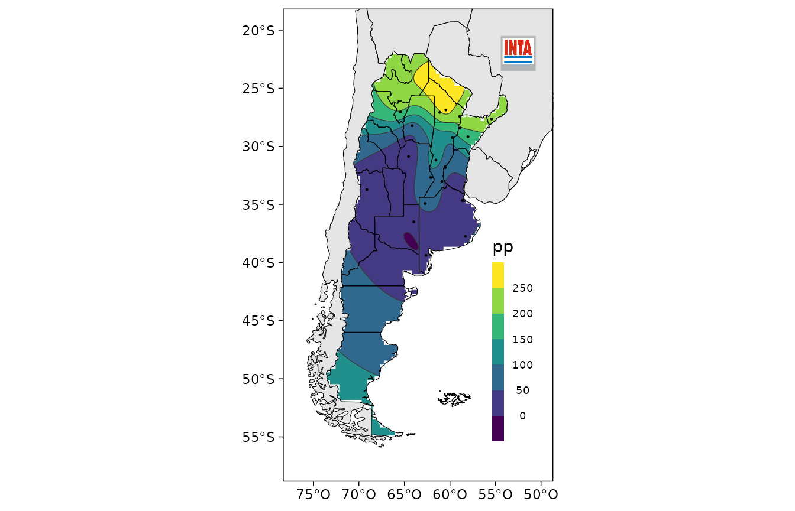
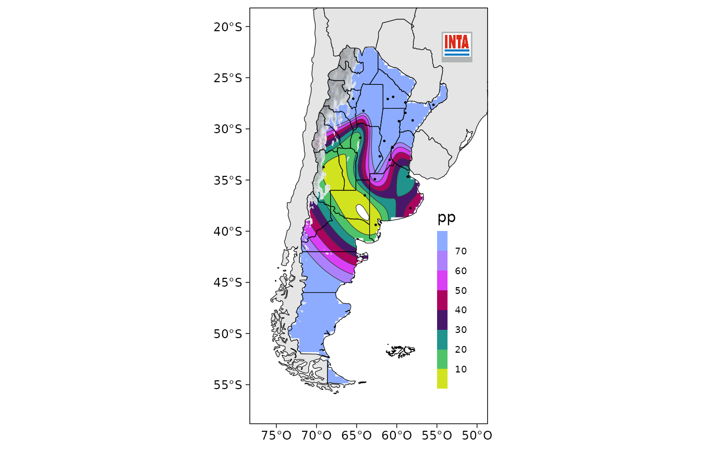

Estadísticas e índices climáticos
Código:vignettes/estadisticas-e-indices-climaticos.Rmd
estadisticas-e-indices-climaticos.RmdLectura de datos y metadatos
La función leer_nh() importa datos en el formato .DAT
(columnas de ancho fijo) usado por el INTA para distribuir los datos de
las estaciones meteorológicas de su red. A continuación se muestra un
ejemplo con datos de prueba.
archivo <- system.file("extdata", "NH0358.DAT", package = "agroclimatico")
datos <- leer_nh(archivo)
head(datos)
#> codigo codigo_nh fecha t_max t_min precip lluvia_datos lluvia llovizna
#> 1 5 0358 1951-01-01 29.2 8.2 0.0 0 NA NA
#> 2 5 0358 1951-01-02 31.3 17.4 0.0 0 NA NA
#> 3 5 0358 1951-01-03 30.9 18.3 0.0 0 NA NA
#> 4 5 0358 1951-01-04 32.9 20.1 5.2 1 NA NA
#> 5 5 0358 1951-01-05 32.6 18.4 0.0 0 NA NA
#> 6 5 0358 1951-01-06 30.4 10.3 0.0 0 NA NA
#> granizo nieve t_min_5cm t_min_50cm t_suelo_5cm t_suelo_10cm heliofania_efec
#> 1 NA NA NA NA NA NA NA
#> 2 NA NA NA NA NA NA NA
#> 3 NA NA NA NA NA NA NA
#> 4 NA NA NA NA NA NA NA
#> 5 NA NA NA NA NA NA NA
#> 6 NA NA NA NA NA NA NA
#> heliofania_rel p_vapor hr td rocio viento_10m viento_2m rad etp
#> 1 NA NA NA NA NA NA NA NA NA
#> 2 NA NA NA NA NA NA NA NA NA
#> 3 NA NA NA NA NA NA NA NA NA
#> 4 NA NA NA NA NA NA NA NA NA
#> 5 NA NA NA NA NA NA NA NA NA
#> 6 NA NA NA NA NA NA NA NA NALos metadatos de estas estaciones se ven usando
metadatos_nh(), que devuelve un data frame con el código de
cada estación, el nombre y su localización.
head(metadatos_nh())
#> codigo_nh estacion provincia organismo lat lon altura
#> 1 0446 Anguil La Pampa INTA -36.50 -63.98 165
#> 2 0196 Azul Buenos Aires SMN -36.75 -59.83 132
#> 3 0221 Bahía Blanca Buenos Aires SMN -38.73 -62.17 83
#> 4 0400 Balcarce Buenos Aires INTA -37.75 -58.30 130
#> 5 0323 Bariloche Río Negro SMN -41.15 -71.17 840
#> 6 0216 Barrow Buenos Aires INTA -38.32 -60.25 120La función permite filtrar datos según su código, un rango de longitud, o latitud.
head(metadatos_nh(lat = c(-40, -30)))
#> codigo_nh estacion provincia organismo lat lon altura
#> 1 0446 Anguil La Pampa INTA -36.50 -63.98 165
#> 2 0196 Azul Buenos Aires SMN -36.75 -59.83 132
#> 3 0221 Bahía Blanca Buenos Aires SMN -38.73 -62.17 83
#> 4 0400 Balcarce Buenos Aires INTA -37.75 -58.30 130
#> 5 0216 Barrow Buenos Aires INTA -38.32 -60.25 120
#> 6 0008 Benito Juárez Buenos Aires SMN -37.72 -59.78 207
head(metadatos_nh(lon = c(-75, -71)))
#> codigo_nh estacion provincia organismo lat lon altura
#> 1 0323 Bariloche Río Negro SMN -41.15 -71.17 840
#> 2 0525 Chapelco Neuquén SMN -40.08 -71.13 779
#> 3 0158 El Bolsón Río Negro SMN -41.97 -71.52 337
#> 4 0350 El Bolsón Río Negro SMN -41.93 -71.55 310
#> 5 0571 El Calafate Santa Cruz SMN -50.27 -72.05 204
#> 6 0303 Esquel Chubut SMN -42.90 -71.35 787El data frame devuelto puede plotearse rápidamente para ver la ubicación de las estaciones.
plot(metadatos_nh(lon = c(-75, -71)))Análisis de la precipitación
datos_mensuales <- NH0358 %>%
group_by(fecha = lubridate::round_date(fecha, "month")) %>%
reframe(precip = mean(precip, na.rm = TRUE),
etp = mean(etp, na.rm = TRUE))
head(datos_mensuales)
#> # A tibble: 6 × 3
#> fecha precip etp
#> <date> <dbl> <dbl>
#> 1 1951-01-01 1.48 NaN
#> 2 1951-02-01 4.39 NaN
#> 3 1951-03-01 3.53 NaN
#> 4 1951-04-01 2.00 NaN
#> 5 1951-05-01 7.47 NaN
#> 6 1951-06-01 0.44 NaNAnomalía porcentual
Una primera aproximacion es calcular cuánto se desvía la precipitación cada mes de su valor típico en procentaje.
datos_mensuales <- datos_mensuales %>%
group_by(mes = month(fecha)) %>%
mutate(anomalia = anomalia_porcentual(precip, na.rm = TRUE))
head(datos_mensuales)
#> # A tibble: 6 × 5
#> # Groups: mes [6]
#> fecha precip etp mes anomalia
#> <date> <dbl> <dbl> <dbl> <dbl>
#> 1 1951-01-01 1.48 NaN 1 -0.522
#> 2 1951-02-01 4.39 NaN 2 0.105
#> 3 1951-03-01 3.53 NaN 3 -0.0169
#> 4 1951-04-01 2.00 NaN 4 -0.449
#> 5 1951-05-01 7.47 NaN 5 1.91
#> 6 1951-06-01 0.44 NaN 6 -0.782Valores cercanos a cero implican que la precipitación de ese mes fue similar a su valor promedio. 1 indica que llovió el doble de lo normal, mientras que -0.5 significa que en ese mes llovió la mitad de lo que suele llover.
Si la idea es usar esta medición para monitoreo, es importante fijar
el período de referencia sobre el cual se calcula la precipitación
media. De otra forma, a medida que se recolectan más datos, los
promedios van a variar y con ellos los valores calculados. Entonces,
para asegurarse de que los datos futuros no modifiquen los percentiles
pasados, se puede especificar el período de referencia con el argumento
referencia. Por ejemplo, este código devuelve el desvío de
cada mes con respecto a la media anterior a 1980.
datos_mensuales <- datos_mensuales %>%
group_by(mes = month(fecha)) %>%
mutate(anomalia = anomalia_porcentual(precip, na.rm = TRUE, referencia = year(fecha) < 1980)) %>%
ungroup()referencia también puede ser un vector numérico de
precipitación. Esto es útil si se calcula el valor de referencia a parte
y luego sólo se leen los nuevos datos.
Otras funciones de agroclimatico tienen este argumento, así que para mantener este período fijo, se puede crear una nueva columna.
datos_mensuales <- datos_mensuales %>%
mutate(referencia = year(fecha) < 1980)
head(datos_mensuales)
#> # A tibble: 6 × 6
#> fecha precip etp mes anomalia referencia
#> <date> <dbl> <dbl> <dbl> <dbl> <lgl>
#> 1 1951-01-01 1.48 NaN 1 -0.509 TRUE
#> 2 1951-02-01 4.39 NaN 2 0.112 TRUE
#> 3 1951-03-01 3.53 NaN 3 0.0687 TRUE
#> 4 1951-04-01 2.00 NaN 4 -0.456 TRUE
#> 5 1951-05-01 7.47 NaN 5 2.52 TRUE
#> 6 1951-06-01 0.44 NaN 6 -0.798 TRUEDeciles
Otor indicador que puede analizarse es el decil al que pertenece la precipitación de cada mes.
datos_mensuales <- datos_mensuales %>%
group_by(mes = month(fecha)) %>%
mutate(decil = decil(precip, referencia = referencia)) %>%
ungroup()
head(datos_mensuales)
#> # A tibble: 6 × 7
#> fecha precip etp mes anomalia referencia decil
#> <date> <dbl> <dbl> <dbl> <dbl> <lgl> <dbl>
#> 1 1951-01-01 1.48 NaN 1 -0.509 TRUE 2.41
#> 2 1951-02-01 4.39 NaN 2 0.112 TRUE 7.24
#> 3 1951-03-01 3.53 NaN 3 0.0687 TRUE 6.90
#> 4 1951-04-01 2.00 NaN 4 -0.456 TRUE 2.07
#> 5 1951-05-01 7.47 NaN 5 2.52 TRUE 9.66
#> 6 1951-06-01 0.44 NaN 6 -0.798 TRUE 1.72En este caso, si un mes cae en el decil 5, significa que la mitad de los meses (en el período de referencia) tiene menor precipitación.
Índice de intensidad de sequía de Palmer
Un indicador de sequía muy utilizado es el PDSI (Palmer Drought
Severity Index) que además de la precipitación, tiene en cuenta la
evapotranspiración potencial (etp) y la capacidad de carga (cc) del
suelo. agroclimatico provee una función pdsi() que computa
el PSDI usando los coeficientes originales de Palmer y una función
pdsi_ac() que usa la version autocalibrada.
datos_mensuales <- datos_mensuales %>%
mutate(pdsi = pdsi_ac(precip, etp, cc = 100))
head(datos_mensuales)
#> # A tibble: 6 × 8
#> fecha precip etp mes anomalia referencia decil pdsi
#> <date> <dbl> <dbl> <dbl> <dbl> <lgl> <dbl> <dbl>
#> 1 1951-01-01 1.48 NaN 1 -0.509 TRUE 2.41 NA
#> 2 1951-02-01 4.39 NaN 2 0.112 TRUE 7.24 NA
#> 3 1951-03-01 3.53 NaN 3 0.0687 TRUE 6.90 NA
#> 4 1951-04-01 2.00 NaN 4 -0.456 TRUE 2.07 NA
#> 5 1951-05-01 7.47 NaN 5 2.52 TRUE 9.66 NA
#> 6 1951-06-01 0.44 NaN 6 -0.798 TRUE 1.72 NAÍndice Estandarizado de Precipitación
A diferencia de los otros índices en el Índice Estandarizado de
Precipitación, a cada observación le puede corresponder más de un valor
(uno por cada escala) y además devuelve una serie completa (es decir,
sin datos faltanes implícitos). Por lo tanto, en vez de usarla con
mutate(), se usa con reframe().
spi <- datos_mensuales %>%
reframe(spi_indice(fecha, precip, escalas = 1:12, referencia = referencia))
head(spi)
#> # A tibble: 6 × 3
#> fecha escala spi
#> <date> <dbl> <dbl>
#> 1 1951-01-01 1 -0.919
#> 2 1951-02-01 1 0.398
#> 3 1951-03-01 1 0.340
#> 4 1951-04-01 1 -0.585
#> 5 1951-05-01 1 1.98
#> 6 1951-06-01 1 -1.07Para seguir la serie temporal en una escala en particular, primero hay que filtrarla (o calcular el spi sólo para esa escala)
Para visualizar todas las escalas computadas, se puede usar
geom_contour_filled()
ggplot(spi, aes(fecha, escala)) +
geom_contour_filled(aes(z = spi, fill = after_stat(level_mid))) +
scale_fill_gradient2()Análisis de extremos
extremos <- NH0358 %>%
group_by(anio = year(fecha)) %>%
reframe(umbrales(helada = t_min <= 0,
mucho_calor = t_max >= 25))
head(extremos)
#> # A tibble: 6 × 5
#> anio extremo N prop na
#> <dbl> <chr> <int> <dbl> <dbl>
#> 1 1951 helada 14 0.0384 0
#> 2 1951 mucho_calor 144 0.395 0
#> 3 1952 helada 22 0.0601 0
#> 4 1952 mucho_calor 142 0.389 0.00273
#> 5 1953 helada 18 0.0493 0
#> 6 1953 mucho_calor 119 0.326 0El resultado es un data frame con columnas extremo (el
nombre del extremo), N (número de observaciones para las
cuales se dio el extremo), prop (proporción de
observaciones) y na (proporción de valores faltantes),
Una posible visualización de la candidad de días con heladas y calor sofocante podría ser esta:
extremos %>%
ggplot(aes(anio, prop*365)) +
geom_line() +
geom_smooth(method = "glm", method.args = list(family = "quasipoisson")) +
facet_wrap(~extremo, scales = "free")Dado que esta función cuenta observaciones, es importante que las
series estén completas. Es decir, sin datos faltanes implícitos. Para
completar la serie, se puede usar la función
completar_serie(). Ësta función toma un vector de fechas y
la resolución esperada de los datos y agrega las filas faltantes,
poniendo NA en las columnas. Para tablas con datos para
múltiples estaciones o localidades, conviene primero agrupar.
completa <- NH0358 %>%
group_by(codigo_nh) %>%
completar_serie(fecha, "1 dia")Dia promedio de inicio y fin
Para las heladas, es importante saber el día promedio en el que se da
la primera y la última helada, para eso se puede usar la función
dias_promedio():
NH0358 %>%
filter(t_min <= 0) %>% # filtrar sólo los días donde hay heladas.
reframe(dias_promedio(fecha))
#> variable dia mes dia_juliano
#> 1 primer_dia 28 5 148
#> 2 ultimo_dia 31 8 243La primera helada se da, en promedio, el 25 de junio y la úĺtima el 30 de agosto.
Persistencia
Un dato importante para cualquier extremo es la longitud de días
consecutivos con el extremo. La función olas (olas de
calor, olas de frío) divide una serie de fechas en eventos de
observaciones consecutivas donde se se da una condición lógica.
olas_de_temperatura <- NH0358 %>%
reframe(olas(fecha,
mucho_calor = t_max >= 25,
helada = t_min <= 0))
head(olas_de_temperatura)
#> ola inicio fin longitud
#> 1 mucho_calor 1951-01-01 1951-01-21 21 days
#> 2 mucho_calor 1951-01-25 1951-01-31 7 days
#> 3 mucho_calor 1951-02-02 1951-02-03 2 days
#> 4 mucho_calor 1951-02-06 1951-02-12 7 days
#> 5 mucho_calor 1951-02-17 1951-02-23 7 days
#> 6 mucho_calor 1951-03-01 1951-03-03 3 daysNuevamente, se podría visualizar el cambio en la longitud promedio de las olas de calor y de olas de heladas de esta forma:
Mapas
Si se tienen observaciones en estaciones, la función
mapear() genera un mapa de contornos llenos con el mapa de
Argentina, países limítrofes y logo del INTA.
set.seed(496)
datos_aleatorios <- subset(metadatos_nh())
datos_aleatorios <- data.frame(datos_aleatorios, pp = rgamma(nrow(datos_aleatorios), 0.5, scale = 1)*70)
Con el argumento escala se puede definir la escala de
colores y, opcionalmente, los niveles en los niveles a graficar. Esto
permite tener mapas consistentes. El paquete viene con una serie de
escalas ya definidas (ver ?escalas) y la función
leer_surfer() que permite generar estas escalas a partir de
los archivos .lvl que usa el programa Surfer.

El argumento cordillera controla si se va a pintar de
gris las regiones de altura, donde el kriging que se usa para interpolar
los datos entre los puntos observados posiblemente sea aún menos válido
que en el resto del territorio.
Finalmente, los argumentos titulo,
subtitulo y fuente permiten agregar
información extra.
with(datos_aleatorios, mapear(pp, lon, lat, escala = escala_pp_diaria, cordillera = TRUE,
titulo = "Precipitación",
subtitulo = "Para algún día",
fuente = "Fuente: rgamma"))
Como mapear() devuelve un objeto de ggplot2, se puede
seguir customizando con cualquier función de ese paquete.